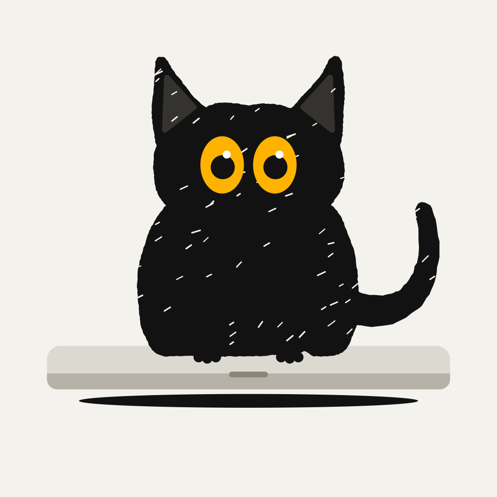

Preview

Get
Age4+
CategoryDeveloper Tools
PriceFree
Size—
Fields to paste
Screenshots and icon
Upload under iPhone 6.9" Display, in this order. 1320 × 2868, opaque PNG. Apple scales them down for smaller iPhones.
The phone screens are real Simulator captures of the app's demo mode (-KakurenekoDemo …), with the fixtures written from the Mac app's real alert templates. Shot 2's alert card is drawn from the same texts as the real notification (title, Mac name, body, Soot thumbnail and the two long-press buttons), because the Simulator can't show a real CloudKit alert. Regenerate with marketing/app-store/render.sh.
App icon: app-icon-1024.png (1024 × 1024, no alpha). Xcode uploads it with the build. You don't upload it separately.

Still needed from you
| Copyright | Paste 2026 y0ung-T. |
| Price | Choose Free under Pricing and Availability. |
| App Review contact | Name, phone and email. |
| Demo video for App Review | A short unlisted video of the Mac and iPhone working together. Its link goes into the review notes. |
| Website live | The support and privacy URLs have to load before you submit. |
support@kakureneko.com | Set up email forwarding at Namecheap. |